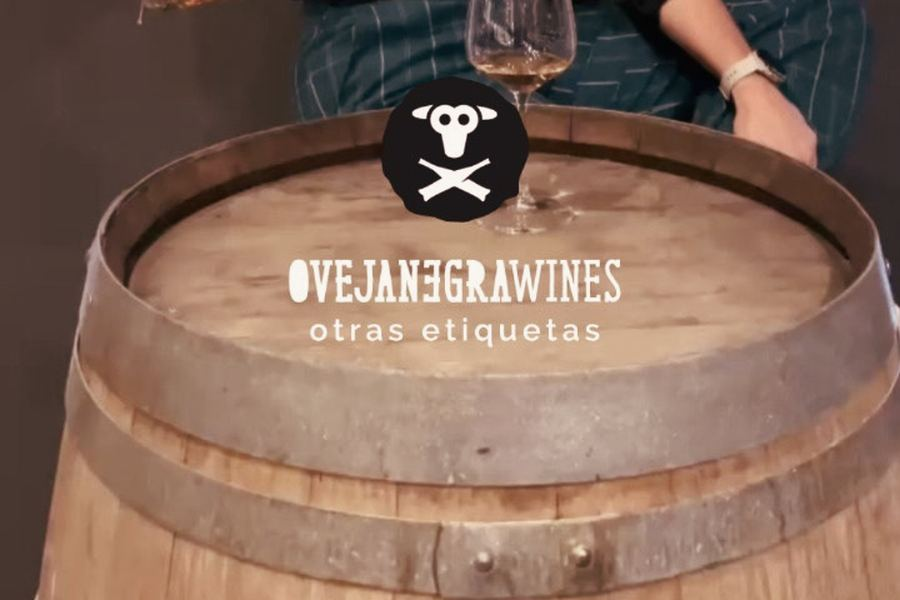
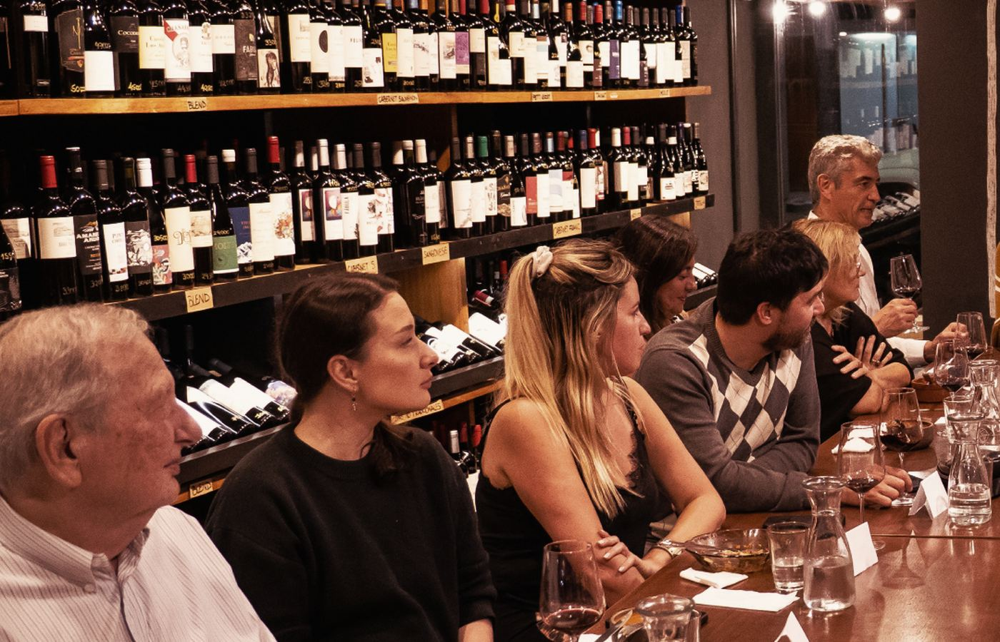
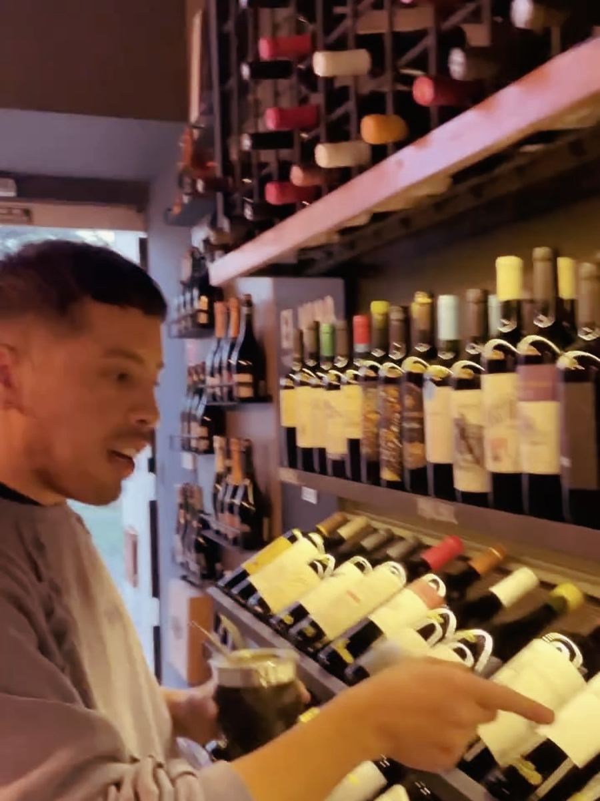
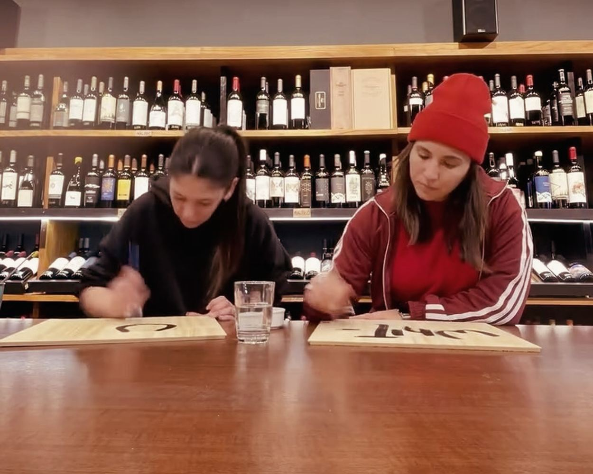
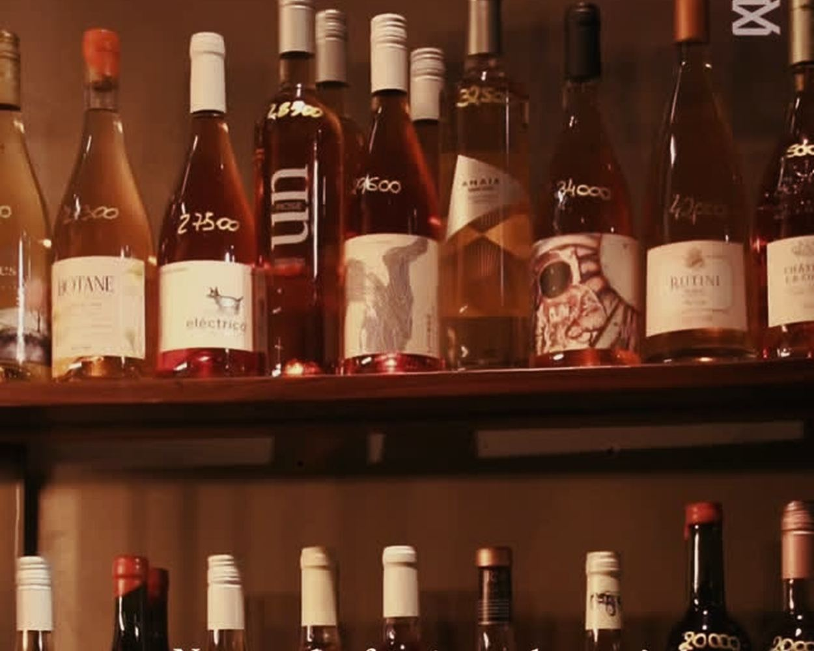
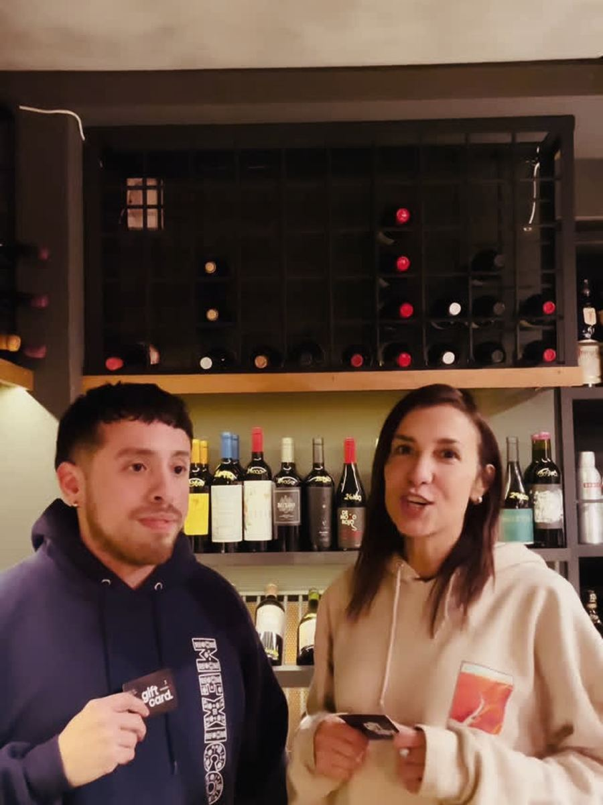

Oveja Negra Wines, vinoteca y wine bar
Vinoteca y wine bar en Av. Donado 1935, Villa Urquiza. Abrimos de martes a sábado, de 16 a 00.
Reservar lugarQuiénes somos
La Gerencia informa: el vino se elige en el estante y se toma en la barra al precio de vinoteca. Etiquetas que no están en el súper y una feria por mes.

- Dónde
- Av. Donado 1935, Villa Urquiza
- Cuándo
- Martes a sábado, 16 a 00 h
- La copa
- $6.000: Malbec, rosado o Chardonnay
- En Google
- 4,7 con 132 reseñas
Cartelera de la semana
Martes a sábado de 16 a 00. Domingo y lunes, cerrado.
Martes16 a 00
Vinoteca y barra. La copa de la casa sale $6.000 y cualquier botella del estante se abre en la mesa al precio de vinoteca.
Ver la barraMiércoles16 a 00
2x1 en vino por copa de 19 a 21 h. Algunos miércoles hay consulta de registros akáshicos.
Avisar que vamosJueves16 a 00
DJ set y 2x1 en copa de 19 a 21 h. Cuando hay Movie Night, se proyecta una película con vino libre.
Reservar Movie NightViernes16 a 00
De 19 a 21 h, lectura de carta astral y tarot con una copa de vino. También es la noche de The Blind Wine cuando hay fecha.
Reservar lecturaSábado16 a 00
La noche fuerte: la feria del mes, Trivia Night, Bingo musical o vino libre. La fecha de cada una sale primero en nuestro Instagram.
Avisame la próxima feriaLas noches de la casa
Tocá una noche y te armamos el mensaje para reservar. Los cupos son chicos: se reserva con nombre y cantidad de personas.
Qué pasa acá
Noches
- Feria de vinos
- The Blind Wine
- Happy Wine Hour
- Movie Night
- Trivia Night
- Bingo musical
- Vino libre
- Carta astral y tarot
- Noche de ilusionismo
- Noche de las Vinotecas
Diez formatos que van rotando; la fecha de cada uno sale en Instagram.
Bodegas que pasaron
- Rosell Boher
- Bodega Garzón
- Kaiken
- Cronos
- La Vigilia
- Argentia
- Herencia Wines
- Martino Wines
- La Fortuna
Y muchas más: por las ferias pasan bodegas chicas que no están en todos lados.
Para festejar
- Cumpleaños
- After office de empresa
- Eventos privados
- Box de regalo
- Descuento en efectivo
Cumpleaños, empresas y box de regalo: tenemos tarifario de eventos.
Pasá el mouse por un nombre y te contamos de qué se trata.





Reseñas en Google
“Etiquetasnoconvencionales,
sorprende!”
Gaston Lacroix5 estrellasGoogle
La atención de Emi y Flor fue impecable: amables, atentos y siempre dispuestos a recomendar.
Participé de una cata guiada de espumantes de Rosell Boher que incluía cena (…). Nos encantó!
La atención de Facu y Emi es muy cálida y eficiente, me dieron ganas de ir todos los viernes a compartir con amigos!
Lugar ameno que ofrecen degustaciones, catas de vino y hasta tarot, ideal para ir con amigos.
4,7 de promedio con 132 reseñas en Google Maps. Leerlas todas
Preguntas
¿Puedo tomar en el local un vino de la vinoteca?
Sí. Cualquier botella que esté en el estante se abre en la barra o en la mesa, al mismo precio que si te la llevás. Si querés algo más corto, la copa de la casa (Malbec, rosado o Chardonnay) sale $6.000.
¿Cómo funciona la feria de vinos?
Una vez por mes armamos la feria con más de 25 etiquetas y las probás todas, cuantas veces quieras. Se paga una entrada (en octubre fue $10.000 anticipada) o un seguro de copa que se devuelve. Avisamos fecha y bodegas en Instagram.
¿Hay que reservar?
Para la barra, no. Para las catas y las noches temáticas, sí: los cupos son chicos. Mandanos nombre y cantidad de personas por WhatsApp al 11 6043-8536; algunas noches se confirman con una seña.
¿Se puede comer?
Sí. Siempre hay empanadas, nuggets, milanesitas y pan de ajo, y de 19.30 a 23 h cocina La Teca: tortilla, milanesa con papas, pollo crispy, veggie bowl y papas bravas.
¿Hacen eventos privados y cumpleaños?
Sí: cumpleaños, after office de empresas y catas cerradas. Tenemos un tarifario de eventos; pedilo por WhatsApp y te lo pasamos.
¿Hay descuento pagando en efectivo?
Sí, 10% en botellas pagando en efectivo.
Escribinos para reservar, encargar una box o armar tu evento.
Av. Donado 1935, Villa Urquiza, CABA
Cómo llegar